# imports
import pandas as pd
import numpy as np
import matplotlib.pyplot as plt
import seaborn as sns
from collections import Counter
import nltk
from nltk.corpus import stopwords
from nltk.tokenize import word_tokenize
from nltk.tokenize import sent_tokenize
from sklearn.feature_extraction.text import CountVectorizer
import os as os
import shutil as shutil
import glob
from nltk.sentiment.vader import SentimentIntensityAnalyzer
df = pd.read_csv("documents.csv")EDA for the AGORA (AI Governance and Regulatory Archive) dataset
The AGORA (AI Governance and Regulatory Archive) dataset is a living collection of AI-relevant laws, regulations, standards, and other governance documents from the United States and around the world. AGORA includes document text, metadata, summaries, and thematic tags to enable deep analysis of the global AI governance landscape.
This section proviodes basic EDA forthe main categories used in our network graph.
collection_counts = df['Collections'].value_counts()
print("total number of txt files per Collection type:")
print(collection_counts.to_string())total number of txt files per Collection type:
Collections
U.S. federal laws 572
U.S. state and local documents 345
U.S. regulations, executive orders, and agency policies 37
NDAA provisions;U.S. federal laws;FY2026 NDAA 37
U.S. federal laws;NDAA provisions;FY2023 NDAA 30
Chinese law and policy 26
Miscellaneous documents 25
U.S. federal laws;NDAA provisions;FY2021 NDAA 24
NDAA provisions;FY2025 NDAA 23
U.S. federal laws;NDAA provisions;FY2024 NDAA 22
Corporate policies and commitments 12
U.S. federal laws;NDAA provisions;FY2022 NDAA 12
Editors' Picks;U.S. regulations, executive orders, and agency policies 10
Multinational 10
Editors' Picks;U.S. state and local documents 9
Editors' Picks;Multinational 9
Editors' Picks;Chinese law and policy 7
U.S. regulations, executive orders, and agency policies;Editors' Picks 6
Editors' Picks;Corporate policies and commitments 5
Editors' Picks;Miscellaneous documents 4
Editors' Picks 4
Editors' Picks;U.S. federal laws 1
U.S. state and local documents;Editors' Picks 1
Chinese law and policy;Editors' Picks 1The code above looks at the documents.csv file to determine the number of .txt files that are included in each Collection. It looks like some topics have mutiple subcategories for Collections (ex. U.S. federal laws;NDAA provisions; FY2023 NDAA and U.S. federal laws; NDAA provisions;FY2022 NDAA) while others are more generalized.
The cell below filters the documents.csv file to provide a list of matching Agora IDs. these IDs correspond to the .txt file that contains the contents of that policy.
# filtering txt files by collection
def get_agora_ids_by_collection(df, collections):
"""
filters a .csv file by the given collection and returns a list of matching Agora IDs
"""
# clean whitespace
matched_rows = df[df['Collections'].astype(str).str.strip() == collections.strip()]
# extract ids, drop nulls, convert to str
id_list = matched_rows['AGORA ID'].dropna().astype(str).tolist()
return id_listThe cell below uses the get_agora_ids_by_collection function to match IDs with the coresponding .txt file, filtering by collection. This scope of this EDA section is limited to U.S. regulations, executive orders, and agency policies, U.S. state and local documents, and U.S. federal laws.
# extracting targeted collection
target_collection = "Multinational"
matching_ids = get_agora_ids_by_collection(df, target_collection)
# id_string = ", ".join(str(id) for id in matching_ids)
# view results
# print(f"IDs found for '{target_collection}':", matching_ids)
# print(f'total number of matches: {len(matching_ids)}')The cell below evaluates the .txt files in the fulltext folder to to match them to the collection type, and then creates a new folder for .txt files that are included in that collection.
def group_collection_text_files(df, collection_name, source_folder="fulltext", output_base_folder="."):
"""
looks inside the 'fulltext' folder for {id}.txt files matching a collection and copies them into a new collection folder.
"""
# filter and extract integer IDs, drop NA's, make int, convert to list
matched_rows = df[df['Collections'].astype(str).str.strip() == collection_name.strip()]
matching_ids = matched_rows['AGORA ID'].dropna().astype(int).tolist()
print(f"found {len(matching_ids)} matching records in the documents csv for: '{collection_name}'")
if not matching_ids:
print("no matching IDs found for this collection name.")
return matching_ids
# 3. create destination folder
safe_folder_name = "".join(c for c in collection_name if c.isalnum() or c in (' ', '_', '-')).strip()
destination_folder = os.path.join(output_base_folder, safe_folder_name)
os.makedirs(destination_folder, exist_ok=True)
print(f"created/verified destination folder at: '{destination_folder}'")
# 4. search 'fulltext' folder and copy corresponding '{id}.txt' files
copied_count = 0
for agora_id in matching_ids:
filename = f"{agora_id}.txt"
# look INSIDE the fulltext subfolder
source_file_path = os.path.join(source_folder, filename)
# put INSIDE the newly created collection folder
destination_file_path = os.path.join(destination_folder, filename)
if os.path.exists(source_file_path):
shutil.copy2(source_file_path, destination_file_path)
copied_count += 1
print(f"successfully copied {copied_count} out of {len(matching_ids)} text files into '{safe_folder_name}/'")
return matching_idsEDA
The cell below applies the group_collection_text_files function to the targeted collections for this EDA section. This was repeated for each collection to create new subfolders for them.
# running function
target_collection = "Corporate policies and commitments"
matching_ids = group_collection_text_files(df, target_collection)found 12 matching records in the documents csv for: 'Corporate policies and commitments'
created/verified destination folder at: './Corporate policies and commitments'
successfully copied 12 out of 12 text files into 'Corporate policies and commitments/'The cell below reads all the .txt files in the specificed collection folder and provides information on word count, file length, and word frequences.
def eda_function(folder_path, stop_words_lang = 'english'):
'''
reads all txt files in the collection folders and perfoms text EDA focusing
on word counts, file length, and word frequencies
'''
search_path = os.path.join(folder_path, '*.txt')
file_paths = glob.glob(search_path)
print(f"text EDA report for folder: '{folder_path}'")
print(f"total text files found: {len(file_paths)}")
# metrics
data_metrics = []
all_words_compiled = []
stop_words_set = set(stopwords.words(stop_words_lang))
for path in file_paths:
file_name = os.path.basename(path)
# print(f"DEBUG: attempting to read file -> {file_name}")
try:
with open(path, 'r', errors = 'ignore') as f:
raw_text = f.read().strip()
except Exception as e:
print(f"read error on '{file_name}': {e}")
continue
if not raw_text:
print(f"SKIPPED: '{file_name}' is completely empty (0 characters).")
continue
# convert text structure
char_counts = len(raw_text)
words = word_tokenize(raw_text)
sentences = sent_tokenize(raw_text)
word_count = len(words)
sentence_count = len(sentences)
# avg word length
avg_word_length = np.mean([len(w) for w in words]) if word_count > 0 else 0
# frequency analysis
clean_file_words = [w.lower() for w in words if w.isalpha()]
all_words_compiled.extend(clean_file_words)
# entry metrics
data_metrics.append({
'file name' : file_name,
'charecter length': char_counts,
'word count': word_count,
'sentence count': sentence_count,
'avg word length': avg_word_length,
})
# print(f"parsed '{file_name}' successfully")
metrics_df = pd.DataFrame(data_metrics)
if metrics_df.empty:
print('warning: no readable data extracted from .txt files')
return None
# statistical summaries
print('length and summary profiles:')
print(metrics_df[['charecter length', 'word count', 'sentence count', 'avg word length']].describe().to_string())
# frequency
meaningful_words = [w for w in all_words_compiled if w not in stop_words_set]
word_frequencies = Counter(meaningful_words)
print('top 10 most frequent meaningful words, excluding stop words')
for word, count in word_frequencies.most_common(10):
print(f" • {word}: {count}")
# visualizations
fig, axes = plt.subplots(1,2, figsize = (10, 6))
# word count distributions
sns.histplot(metrics_df['word count'], kde = True, ax = axes[0], color = 'blue', bins = 5)
axes[0].set_title('distribution of file word counts')
axes[0].set_xlabel('words per file')
# file length
sns.histplot(metrics_df['charecter length'], kde = True,ax=axes[1], color='indigo', bins = 5 )
axes[1].set_title('distribution of file character lengths')
axes[1].set_xlabel('characters per file')
plt.tight_layout()
plt.show()
return metrics_df Corporate policies and commitments - EDA
folder_to_analyze = "Corporate policies and commitments"
analysis_results_df = eda_function(folder_path=folder_to_analyze)text EDA report for folder: 'Corporate policies and commitments'
total text files found: 12
length and summary profiles:
charecter length word count sentence count avg word length
count 12.000000 12.000000 12.000000 12.000000
mean 25199.333333 4245.000000 143.833333 5.026834
std 22045.415270 3724.178421 132.960577 0.104457
min 2732.000000 481.000000 14.000000 4.804574
25% 7412.250000 1249.250000 44.500000 4.991053
50% 17832.500000 2997.000000 88.000000 5.039932
75% 42305.750000 7031.000000 208.750000 5.079848
max 76039.000000 12935.000000 437.000000 5.193269
top 10 most frequent meaningful words, excluding stop words
• ai: 756
• model: 268
• models: 255
• system: 206
• use: 203
• safety: 199
• data: 199
• security: 197
• systems: 187
• risks: 174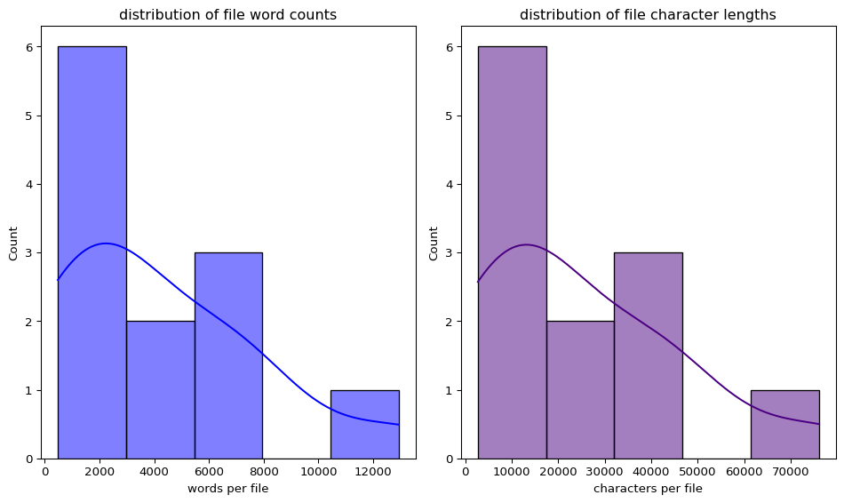
Multinational - EDA
folder_to_analyze = "Multinational"
analysis_results_df = eda_function(folder_path=folder_to_analyze)text EDA report for folder: 'Multinational'
total text files found: 10
length and summary profiles:
charecter length word count sentence count avg word length
count 10.000000 10.000000 10.000000 10.000000
mean 10765.500000 1786.400000 40.200000 5.137822
std 7478.468281 1191.789989 25.823331 0.388437
min 2800.000000 470.000000 14.000000 4.230506
25% 4839.250000 758.000000 23.000000 5.065992
50% 10059.000000 1699.500000 40.000000 5.138927
75% 13610.250000 2556.500000 44.000000 5.303811
max 25650.000000 3900.000000 104.000000 5.673077
top 10 most frequent meaningful words, excluding stop words
• ai: 363
• systems: 147
• development: 111
• intelligence: 108
• artificial: 107
• system: 93
• risk: 87
• including: 81
• international: 78
• human: 67
US state and local documents - EDA
folder_to_analyze = "US state and local documents"
analysis_results_df = eda_function(folder_path=folder_to_analyze)text EDA report for folder: 'US state and local documents'
total text files found: 345
length and summary profiles:
charecter length word count sentence count avg word length
count 345.000000 345.000000 345.000000 345.000000
mean 10754.556522 1950.394203 55.860870 4.632397
std 10984.695933 2003.238873 56.724685 0.297351
min 329.000000 59.000000 1.000000 3.795673
25% 3768.000000 700.000000 19.000000 4.446234
50% 7205.000000 1301.000000 39.000000 4.615164
75% 13192.000000 2446.000000 70.000000 4.797587
max 70618.000000 12646.000000 449.000000 5.737485
top 10 most frequent meaningful words, excluding stop words
• section: 4689
• shall: 4673
• intelligence: 3063
• artificial: 3057
• state: 2649
• ai: 2552
• information: 2463
• use: 2431
• b: 2319
• system: 2206
the top 10 most frequent meaningful words excluding stop words for the “US state and local documents” folder were:
• section: 4689 • shall: 4673 • intelligence: 3063 • artificial: 3057 • state: 2649 • ai: 2552 • information: 2463 • use: 2431 • b: 2319 • system: 2206
These documents are typically under 2000 words, which ison average shorter than some of the other texts used in our network.
US regulations executive orders and agency policies - EDA
folder_to_analyze = "US regulations executive orders and agency policies"
analysis_results_df = eda_function(folder_path=folder_to_analyze)text EDA report for folder: 'US regulations executive orders and agency policies'
total text files found: 37
length and summary profiles:
charecter length word count sentence count avg word length
count 37.000000 37.000000 37.000000 37.000000
mean 21206.621622 3701.837838 101.216216 4.831365
std 27021.611165 4537.846403 123.368269 0.314888
min 874.000000 163.000000 7.000000 3.735101
25% 3446.000000 610.000000 21.000000 4.612097
50% 10496.000000 1773.000000 51.000000 4.860370
75% 30116.000000 5064.000000 135.000000 5.053120
max 138992.000000 22344.000000 608.000000 5.336153
top 10 most frequent meaningful words, excluding stop words
• ai: 1762
• use: 550
• data: 519
• agencies: 444
• must: 431
• information: 428
• systems: 420
• may: 413
• including: 389
• federal: 303
These documents are typically under 5000 words. The top 10 most frequent meaningful words give us some insight into the focus for AI at the federal level, although further analysis is needed.
The National Defense Authorization Act is any of a series of United States federal laws specifying the annual budget and expenditures of the U.S. Department of Defense. The dataset provides .txt data for 2021-2024 and 2026
US federal lawsNDAA provisionsFY2021 NDAA - EDA
folder_to_analyze = "US federal lawsNDAA provisionsFY2021 NDAA"
analysis_results_df = eda_function(folder_path=folder_to_analyze)text EDA report for folder: 'US federal lawsNDAA provisionsFY2021 NDAA'
total text files found: 24
length and summary profiles:
charecter length word count sentence count avg word length
count 24.000000 24.000000 24.000000 24.000000
mean 4858.416667 900.375000 18.708333 4.608577
std 3569.336047 670.423799 13.668368 0.249451
min 796.000000 146.000000 6.000000 4.011583
25% 3010.000000 560.250000 9.000000 4.492789
50% 3747.500000 693.500000 16.500000 4.625785
75% 5557.750000 1046.250000 22.250000 4.788770
max 18784.000000 3531.000000 68.000000 5.141066
top 10 most frequent meaningful words, excluding stop words
• defense: 190
• secretary: 166
• shall: 162
• b: 128
• department: 106
• section: 105
• intelligence: 96
• artificial: 90
• including: 89
• subsection: 87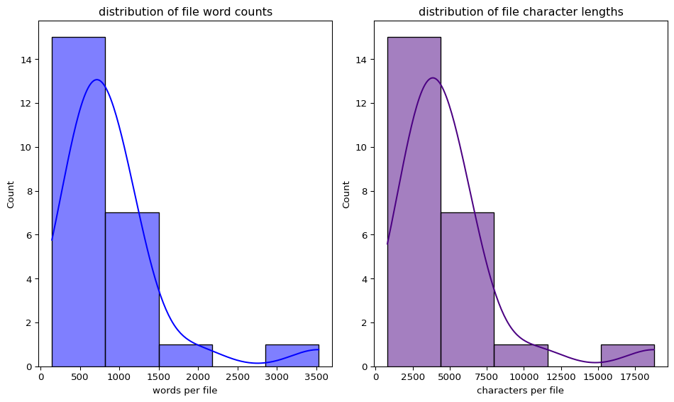
US federal lawsNDAA provisionsFY2022 NDAA - EDA
folder_to_analyze = "US federal lawsNDAA provisionsFY2022 NDAA"
analysis_results_df = eda_function(folder_path=folder_to_analyze)text EDA report for folder: 'US federal lawsNDAA provisionsFY2022 NDAA'
total text files found: 12
length and summary profiles:
charecter length word count sentence count avg word length
count 12.000000 12.000000 12.000000 12.000000
mean 3597.666667 650.833333 15.583333 4.734543
std 1585.584339 291.494841 9.976867 0.364891
min 1522.000000 287.000000 6.000000 3.924242
25% 2689.250000 434.000000 9.750000 4.622303
50% 3229.500000 626.000000 12.000000 4.774326
75% 4412.250000 789.000000 19.500000 4.858388
max 7356.000000 1311.000000 38.000000 5.508046
top 10 most frequent meaningful words, excluding stop words
• defense: 106
• secretary: 86
• intelligence: 63
• shall: 57
• department: 57
• artificial: 44
• b: 42
• subsection: 38
• data: 33
• capabilities: 28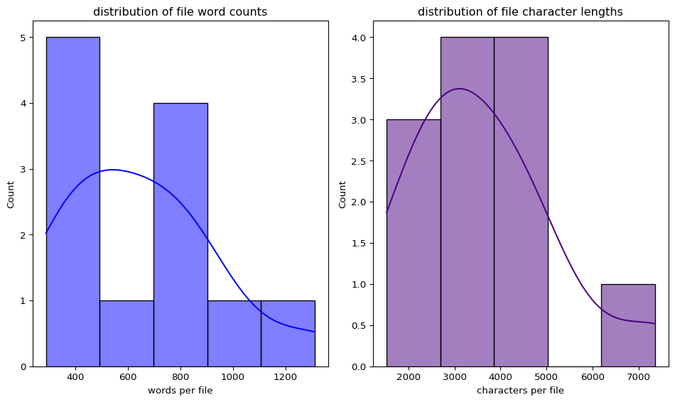
US federal lawsNDAA provisionsFY2023 NDAA - EDA
folder_to_analyze = "US federal lawsNDAA provisionsFY2023 NDAA"
analysis_results_df = eda_function(folder_path=folder_to_analyze)text EDA report for folder: 'US federal lawsNDAA provisionsFY2023 NDAA'
total text files found: 30
length and summary profiles:
charecter length word count sentence count avg word length
count 30.000000 30.000000 30.000000 30.000000
mean 4798.366667 870.133333 18.266667 4.787119
std 3473.479310 677.529016 13.513552 0.323062
min 805.000000 146.000000 4.000000 4.064045
25% 2775.500000 482.250000 8.250000 4.625168
50% 3668.000000 644.000000 13.500000 4.736046
75% 5158.250000 920.250000 21.000000 4.974188
max 14738.000000 2873.000000 55.000000 5.516279
top 10 most frequent meaningful words, excluding stop words
• intelligence: 272
• shall: 191
• b: 169
• section: 152
• artificial: 150
• defense: 142
• subsection: 114
• secretary: 102
• c: 95
• national: 91
US federal lawsNDAA provisionsFY2024 NDAA - EDA
folder_to_analyze = "US federal lawsNDAA provisionsFY2024 NDAA"
analysis_results_df = eda_function(folder_path=folder_to_analyze)text EDA report for folder: 'US federal lawsNDAA provisionsFY2024 NDAA'
total text files found: 22
length and summary profiles:
charecter length word count sentence count avg word length
count 22.000000 22.000000 22.000000 22.000000
mean 8325.590909 1509.318182 34.227273 4.751270
std 12268.348015 2254.447993 48.319307 0.286571
min 453.000000 80.000000 4.000000 4.242647
25% 2508.500000 415.250000 7.500000 4.564761
50% 3472.000000 632.500000 11.000000 4.777406
75% 6137.000000 1130.250000 40.500000 4.985781
max 55253.000000 10217.000000 196.000000 5.286747
top 10 most frequent meaningful words, excluding stop words
• defense: 307
• shall: 266
• intelligence: 228
• united: 180
• department: 171
• artificial: 167
• subsection: 165
• b: 163
• secretary: 162
• section: 138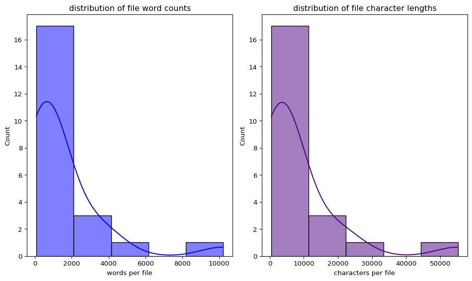
NDAA provisionsUS federal lawsFY2026 NDAA
folder_to_analyze = "NDAA provisionsUS federal lawsFY2026 NDAA"
analysis_results_df = eda_function(folder_path=folder_to_analyze)text EDA report for folder: 'NDAA provisionsUS federal lawsFY2026 NDAA'
total text files found: 37
length and summary profiles:
charecter length word count sentence count avg word length
count 37.000000 37.000000 37.000000 37.000000
mean 4865.459459 769.864865 17.027027 4.823803
std 6560.185878 1050.619927 18.005380 0.271125
min 524.000000 83.000000 4.000000 4.060790
25% 2053.000000 344.000000 9.000000 4.657682
50% 3209.000000 523.000000 12.000000 4.811448
75% 5616.000000 900.000000 17.000000 5.042553
max 41323.000000 6661.000000 111.000000 5.416490
top 10 most frequent meaningful words, excluding stop words
• intelligence: 295
• artificial: 245
• secretary: 230
• defense: 221
• shall: 208
• b: 160
• security: 140
• department: 128
• subsection: 127
• national: 118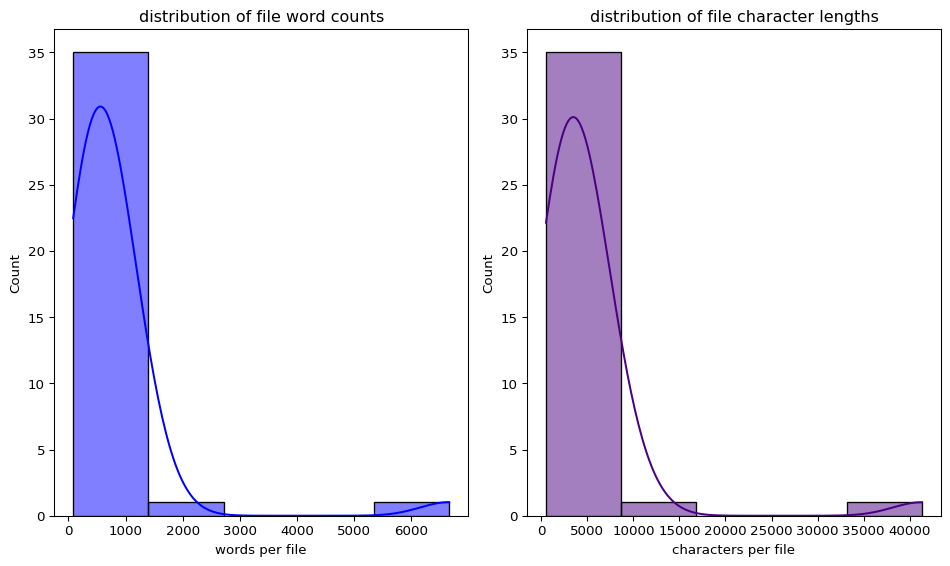
Chinese law and policy - EDA
folder_to_analyze = "Chinese law and policy"
analysis_results_df = eda_function(folder_path=folder_to_analyze)text EDA report for folder: 'Chinese law and policy'
total text files found: 26
length and summary profiles:
charecter length word count sentence count avg word length
count 26.000000 26.000000 26.000000 26.000000
mean 20580.269231 3366.500000 98.269231 5.216675
std 17962.657569 2805.063839 96.155107 0.371976
min 3563.000000 631.000000 12.000000 4.665917
25% 8639.000000 1369.000000 38.000000 4.910206
50% 16178.500000 2836.500000 91.500000 5.275794
75% 25353.250000 4427.000000 121.750000 5.482271
max 86969.000000 13351.000000 505.000000 5.945324
top 10 most frequent meaningful words, excluding stop words
• ai: 1269
• shall: 994
• ethics: 614
• development: 515
• data: 500
• technology: 465
• security: 437
• standards: 392
• research: 329
• relevant: 325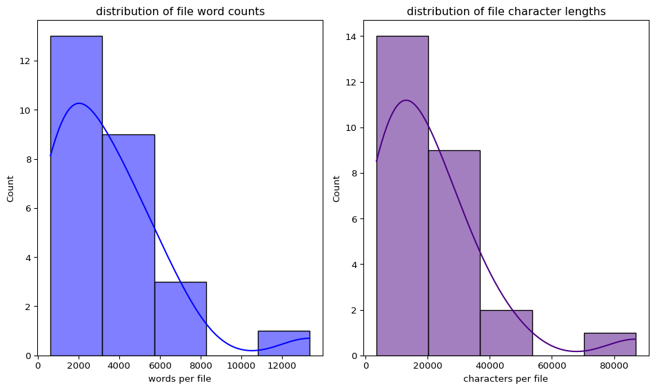
Sentiment Analysis
The function below calculates VADER sentiment score the the .txt files in each folder, and prints out a summary.
# sentiment analysis function
def sentiment_analyzer(folder_path):
'''
reads all .txt foles is a specific folder, calculates VADER sentiment score
for each file, prints summary
'''
search_path = os.path.join(folder_path, '*.txt')
file_paths = glob.glob(search_path)
print (f"sentiment analysis for folder: '{folder_path}")
print(f'total text files found: {len(file_paths)}')
if not file_paths:
print('no .txt files found in this directory')
return None
# initalize
sia = SentimentIntensityAnalyzer()
sentiment_data = []
for path in file_paths:
file_name = os.path.basename(path)
try:
with open(path, 'r', errors = 'ignore') as f:
raw_text = f.read().strip()
except Exception as e:
print(f"read error on '{file_name}': {e} ")
continue
if not raw_text:
continue
# VADAR scores
scores = sia.polarity_scores(raw_text)
# classifier
if scores['compound'] >= 0.05:
stance = 'Positive'
elif scores['compound'] <= -0.05:
stance = 'Negative'
else:
stance = 'Neutral'
sentiment_data.append({
'file name': file_name,
'negative score': scores['neg'],
'neutral score': scores['neu'],
'positive score': scores['pos'],
'compound score': scores['compound'],
'overall stance': stance })
# make df
sentiment_df = pd.DataFrame(sentiment_data)
# show summary data
# numerical summaries
print('sentiment intensity metrics summary')
print(sentiment_df[['negative score', 'neutral score', 'positive score', 'compound score']].describe().to_string())
# categorical distributions
print('categorical distributions ')
print(sentiment_df['overall stance'].value_counts().to_string())
# 3. graphs
fig, axes = plt.subplots(1, 2, figsize=(14, 5))
# compound score
sns.histplot(sentiment_df['compound score'], kde=True, ax=axes[0], color='blue', bins=10)
axes[0].set_title('distribution of compound sentiment scores')
axes[0].set_xlabel('compound score (-1 = negative to +1 = positive)')
# categorical breakdown
sns.countplot(data=sentiment_df, x='overall stance', hue = 'overall stance' , ax=axes[1], palette='coolwarm', order=['Positive', 'Neutral', 'Negative'])
axes[1].set_title('document stance classification counts')
axes[1].set_xlabel('stance category')
axes[1].set_ylabel('number of files')
plt.tight_layout()
plt.show()
return sentiment_dfCorporate policies and commitments - Sentiment Analysis
target_folder = "Corporate policies and commitments"
sentiment_results_df = sentiment_analyzer(folder_path=target_folder)sentiment analysis for folder: 'Corporate policies and commitments
total text files found: 12
sentiment intensity metrics summary
negative score neutral score positive score compound score
count 12.000000 12.000000 12.000000 12.000000
mean 0.052167 0.790833 0.157250 0.998833
std 0.018727 0.052641 0.046838 0.001919
min 0.024000 0.717000 0.055000 0.994300
25% 0.039000 0.772750 0.138750 0.999000
50% 0.052500 0.780500 0.158000 0.999700
75% 0.067750 0.811500 0.178750 0.999925
max 0.079000 0.920000 0.242000 1.000000
categorical distributions
overall stance
Positive 12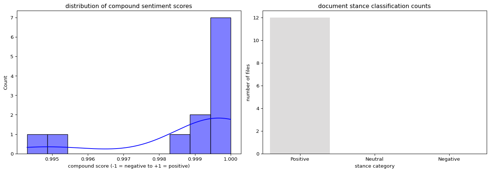
Sentiment from these documents are reported as positive.
Mutlinational — Sentiment Analysis
target_folder = "Multinational"
sentiment_results_df = sentiment_analyzer(folder_path=target_folder)sentiment analysis for folder: 'Multinational
total text files found: 10
sentiment intensity metrics summary
negative score neutral score positive score compound score
count 10.000000 10.000000 10.000000 10.000000
mean 0.053100 0.782000 0.165000 0.796370
std 0.036134 0.060579 0.060531 0.630281
min 0.009000 0.724000 0.044000 -0.997300
25% 0.018000 0.733250 0.134250 0.995050
50% 0.056000 0.763000 0.187000 0.998450
75% 0.077750 0.807750 0.201000 0.999650
max 0.109000 0.888000 0.246000 1.000000
categorical distributions
overall stance
Positive 9
Negative 1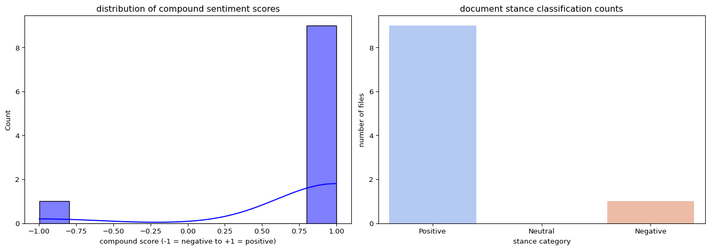
Mostly positive with one document for negative sentiment.
US regulations executive orders and agency policies - Sentiment Analysis
target_folder = "US regulations executive orders and agency policies"
sentiment_results_df = sentiment_analyzer(folder_path=target_folder)sentiment analysis for folder: 'US regulations executive orders and agency policies
total text files found: 37
sentiment intensity metrics summary
negative score neutral score positive score compound score
count 37.000000 37.000000 37.000000 37.000000
mean 0.031865 0.876459 0.091703 0.901476
std 0.020150 0.045143 0.037764 0.257008
min 0.000000 0.784000 0.047000 -0.440600
25% 0.016000 0.855000 0.062000 0.927900
50% 0.031000 0.877000 0.083000 0.997800
75% 0.043000 0.916000 0.113000 0.999800
max 0.083000 0.953000 0.185000 1.000000
categorical distributions
overall stance
Positive 36
Negative 1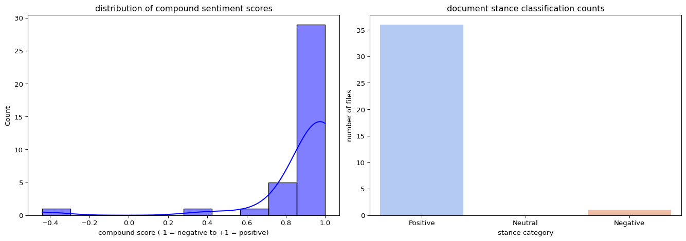
Sentiment around AI tends to be postitive in these txt files
US Federal laws — Sentiment Analysis
target_folder = "US federal laws"
sentiment_results_df = sentiment_analyzer(folder_path=target_folder)sentiment analysis for folder: 'US federal laws
total text files found: 572
sentiment intensity metrics summary
negative score neutral score positive score compound score
count 572.000000 572.000000 572.000000 572.000000
mean 0.023839 0.866886 0.109229 0.853366
std 0.026124 0.047841 0.044986 0.456189
min 0.000000 0.677000 0.010000 -0.999500
25% 0.006000 0.842750 0.076000 0.978300
50% 0.015000 0.873000 0.105000 0.996700
75% 0.035000 0.897000 0.132250 0.999200
max 0.146000 0.989000 0.288000 1.000000
categorical distributions
overall stance
Positive 534
Negative 38
Overall sentiment around AI tends to be positive in the US federal laws evaluated, but less so than other categories
US state and local documents - Sentiment Analysis
target_folder = "US state and local documents"
sentiment_results_df = sentiment_analyzer(folder_path=target_folder)sentiment analysis for folder: 'US state and local documents
total text files found: 345
sentiment intensity metrics summary
negative score neutral score positive score compound score
count 345.000000 345.000000 345.000000 345.000000
mean 0.039557 0.868014 0.092446 0.594285
std 0.031180 0.043203 0.041480 0.745976
min 0.000000 0.740000 0.019000 -0.999900
25% 0.017000 0.837000 0.060000 0.844400
50% 0.032000 0.872000 0.083000 0.989000
75% 0.058000 0.899000 0.116000 0.998500
max 0.153000 0.965000 0.248000 1.000000
categorical distributions
overall stance
Positive 278
Negative 67
US State and local documents appear to have the highest level of polarization when it comes to AI, although the overall stance is still positive.
US federal lawsNDAA provisionsFY2021 NDAA - Sentiment Analysis
target_folder = "US federal lawsNDAA provisionsFY2021 NDAA"
sentiment_results_df = sentiment_analyzer(folder_path=target_folder)sentiment analysis for folder: 'US federal lawsNDAA provisionsFY2021 NDAA
total text files found: 24
sentiment intensity metrics summary
negative score neutral score positive score compound score
count 24.000000 24.000000 24.000000 24.000000
mean 0.018333 0.886583 0.094917 0.831354
std 0.019796 0.038720 0.039519 0.425318
min 0.000000 0.820000 0.024000 -0.951400
25% 0.002750 0.866250 0.079500 0.968850
50% 0.012500 0.890500 0.097500 0.991000
75% 0.026000 0.903250 0.121500 0.995400
max 0.077000 0.976000 0.160000 0.999900
categorical distributions
overall stance
Positive 23
Negative 1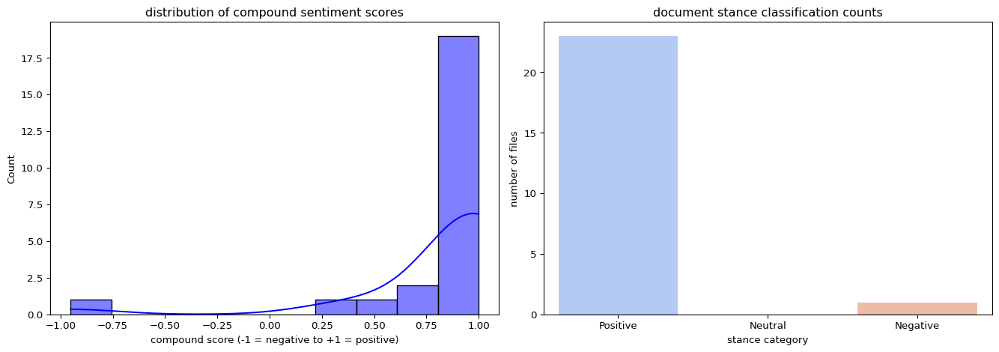
The 2021 National Defense Authorization Act has mostly positive sentiment.
US federal lawsNDAA provisionsFY2022 NDAA - Sentiment Analysis
target_folder = "US federal lawsNDAA provisionsFY2022 NDAA"
sentiment_results_df = sentiment_analyzer(folder_path=target_folder)sentiment analysis for folder: 'US federal lawsNDAA provisionsFY2022 NDAA
total text files found: 12
sentiment intensity metrics summary
negative score neutral score positive score compound score
count 12.000000 12.000000 12.000000 12.000000
mean 0.007833 0.869333 0.122583 0.966192
std 0.011885 0.034629 0.038349 0.086417
min 0.000000 0.799000 0.059000 0.694000
25% 0.000000 0.850500 0.103500 0.991450
50% 0.004000 0.865500 0.126000 0.992850
75% 0.009500 0.887250 0.141750 0.996200
max 0.041000 0.932000 0.201000 0.998400
categorical distributions
overall stance
Positive 12
The 2021 National Defense Authorization Act demonstrates postitive sentiment based on the 12 documents rds AI
US federal lawsNDAA provisionsFY2023 NDAA - Sentiment Analysis
target_folder = "US federal lawsNDAA provisionsFY2023 NDAA"
sentiment_results_df = sentiment_analyzer(folder_path=target_folder)sentiment analysis for folder: 'US federal lawsNDAA provisionsFY2023 NDAA
total text files found: 30
sentiment intensity metrics summary
negative score neutral score positive score compound score
count 30.000000 30.000000 30.000000 30.000000
mean 0.012033 0.861833 0.126267 0.958847
std 0.014602 0.052141 0.051811 0.107907
min 0.000000 0.750000 0.024000 0.476700
25% 0.000250 0.827250 0.086000 0.992350
50% 0.005500 0.861000 0.124000 0.996200
75% 0.019250 0.901250 0.161500 0.998125
max 0.056000 0.976000 0.235000 0.999600
categorical distributions
overall stance
Positive 30
The 2023 National Defense Authorization Act continues to show positive sentiment.
US federal lawsNDAA provisionsFY2024 NDAA - Sentiment Analysis
target_folder = "US federal lawsNDAA provisionsFY2024 NDAA"
sentiment_results_df = sentiment_analyzer(folder_path=target_folder)sentiment analysis for folder: 'US federal lawsNDAA provisionsFY2024 NDAA
total text files found: 22
sentiment intensity metrics summary
negative score neutral score positive score compound score
count 22.000000 22.000000 22.000000 22.000000
mean 0.014364 0.862045 0.123591 0.845109
std 0.028181 0.045268 0.045011 0.466722
min 0.000000 0.753000 0.054000 -0.952200
25% 0.003000 0.833250 0.090000 0.993050
50% 0.007500 0.867500 0.117500 0.995650
75% 0.009750 0.892500 0.154500 0.998250
max 0.122000 0.946000 0.241000 1.000000
categorical distributions
overall stance
Positive 20
Negative 2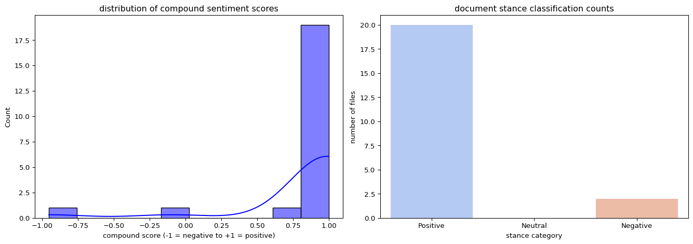
The 2024 National Defense Authorization Act shows a slight uptick in potentially negative sentiment.
NDAA provisionsUS federal lawsFY2026 NDAA- Sentiment Analysis
target_folder = "NDAA provisionsUS federal lawsFY2026 NDAA"
sentiment_results_df = sentiment_analyzer(folder_path=target_folder)sentiment analysis for folder: 'NDAA provisionsUS federal lawsFY2026 NDAA
total text files found: 37
sentiment intensity metrics summary
negative score neutral score positive score compound score
count 37.000000 37.000000 37.000000 37.000000
mean 0.016730 0.849595 0.133568 0.920608
std 0.027258 0.054289 0.049465 0.322611
min 0.000000 0.725000 0.067000 -0.963800
25% 0.005000 0.813000 0.092000 0.977900
50% 0.011000 0.860000 0.117000 0.993000
75% 0.018000 0.896000 0.170000 0.996700
max 0.160000 0.931000 0.254000 0.999900
categorical distributions
overall stance
Positive 36
Negative 1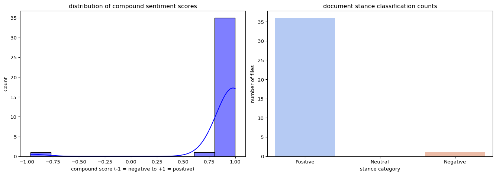
The 2026 National Defense Authorization Act shows mostly positive sentiment.
Chinese law and policy - Sentiment Analysis
target_folder = "Chinese law and policy"
sentiment_results_df = sentiment_analyzer(folder_path=target_folder)sentiment analysis for folder: 'Chinese law and policy
total text files found: 26
sentiment intensity metrics summary
negative score neutral score positive score compound score
count 26.000000 26.000000 26.000000 26.000000
mean 0.044962 0.788462 0.166577 0.922854
std 0.028871 0.053413 0.056827 0.389069
min 0.003000 0.634000 0.082000 -0.984700
25% 0.025750 0.769500 0.122250 0.999300
50% 0.045500 0.805500 0.159500 0.999700
75% 0.058750 0.820500 0.187500 0.999875
max 0.129000 0.869000 0.299000 1.000000
categorical distributions
overall stance
Positive 25
Negative 1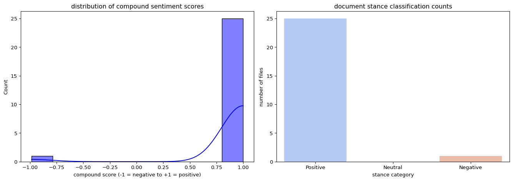
Mostly postivie with 1 document with negative sentiment.